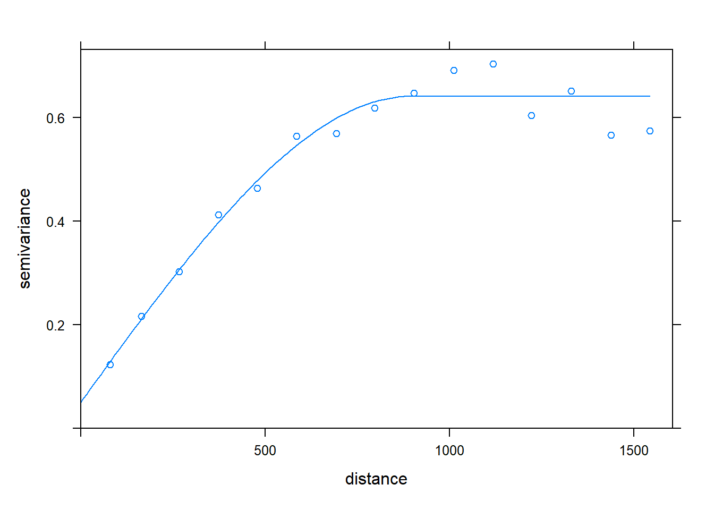
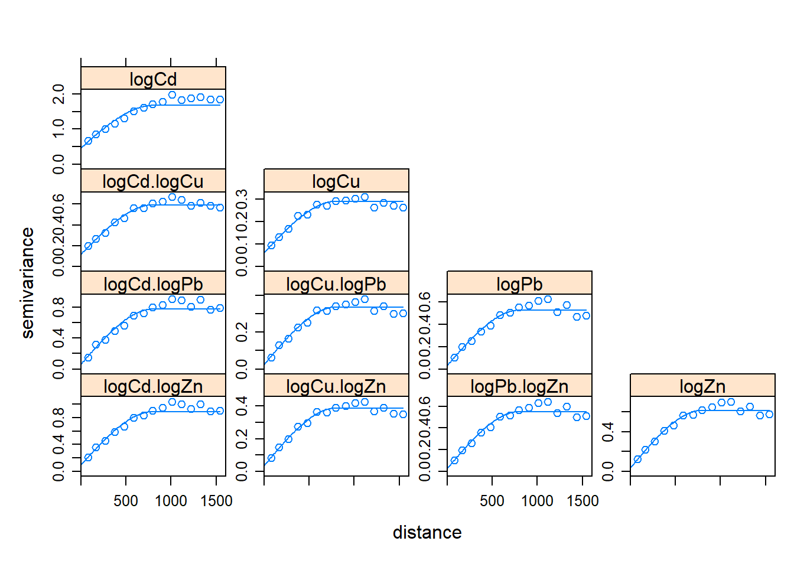
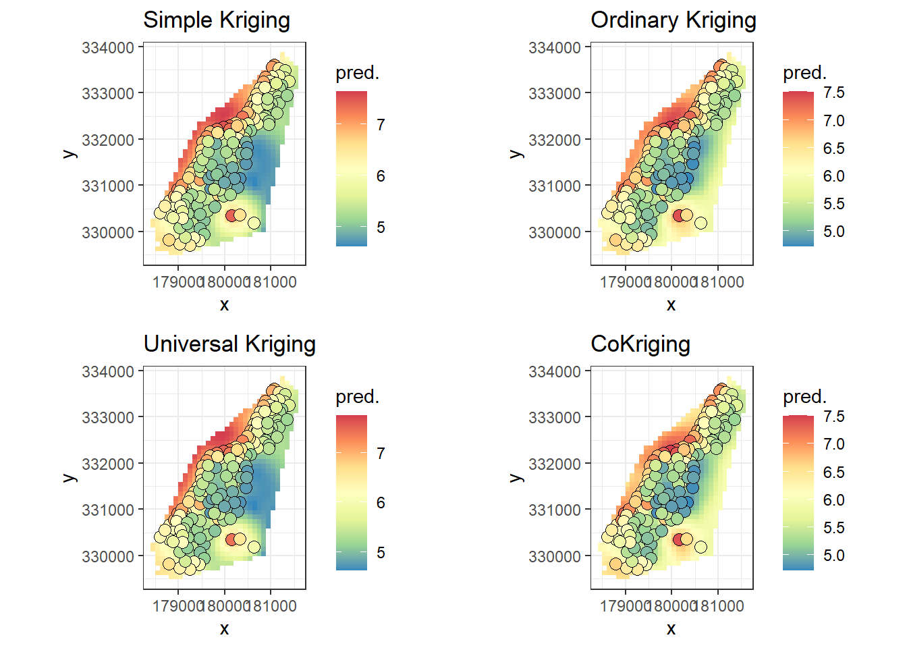
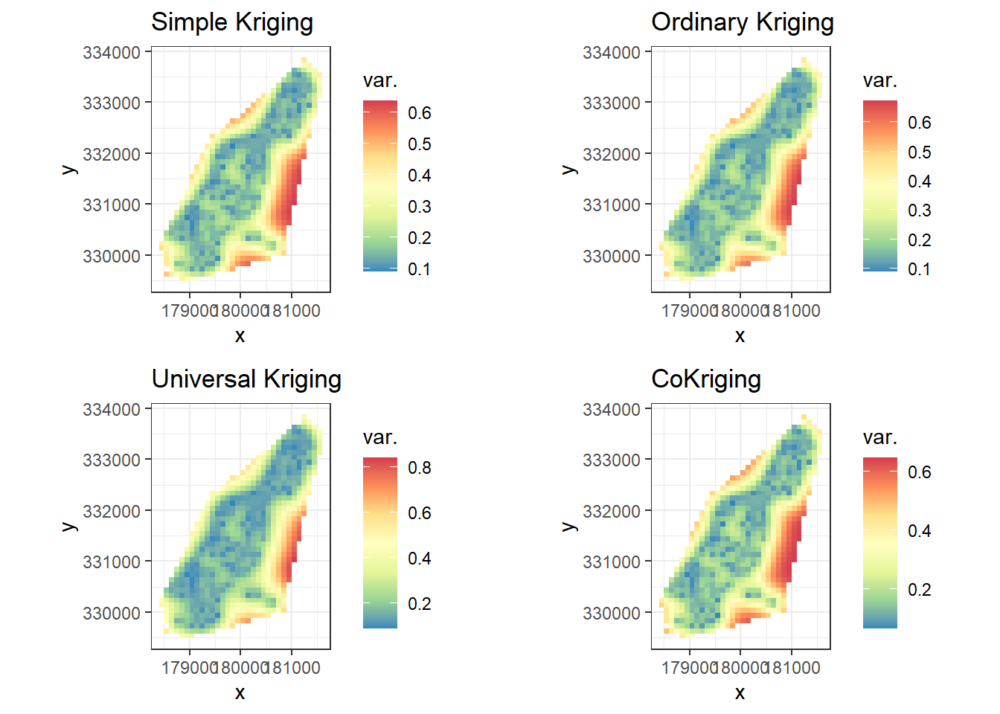

Chapter 1 Introduction to Kriging
克里金法(Kriging)是一種用於空間資料的插值方法，通常視為高斯過程回歸或者 BLUP。
1.1 Assumption
固有平穩過程 (intrinsically stationary process)
- 數學期望與地理位置無關，即觀察任一小區域他的屬性應當相同 (constant mean or variance)
- 半方差函數只與距離有關，即觀察任一小區域他的 Variogram 應當相同 (constant variogram)
若未滿足假設(可由 Voronoi 圖檢驗)，可以對資料做轉換 (log transformation of squared)
1.2 BLUE (Best Linear Unbiased Estimator)
通常我們稱克里金法為最佳無偏線性預測(BLUP) :
* Best : 最小變方 (最小方差)
* Linear : 估計值為觀測值的線性組合
* Unbiased : 估計值的期望值等於真值
1.2.1 普通克里金 (OK Oridnary Kriging)
我們相信空間資料與地理位置具有相關性，對於未知的某個空間資訊\(Y_0\)，我們透過觀測其附近 \(n\) 個位置 \(s_1,\cdots,s_n\) 的 \(n\) 個空間資訊 \(Y\) 來線性組合估計 \(Y_0\)，及以下表述 : \[ \hat Y(s_0) = \sum_{i=1}^n\lambda_iY(s_i) \tag 1 \]
現在我們只要找出權重係數 \(\lambda_i\) 就能解決問題了!，為了滿足無偏的性質，普通克里金(Oridnary Kriging) 假設空間資訊在每一個地理位置都有相同的相同期望值 (constant unknown mean)，即數學期望值與空間位置無關
\[ Y(\mathbf{s}) = \mu + \delta(\mathbf{s})\tag 2 \]
其中 \(E(Y) = \mu\) 且 \(\delta\) (平均為0的固有平穩過程) 為地理位置 \(\mathbf{s}\)，\(Y\) 與 \(\hat Y\) 的誤差
\[ E(\hat Y(s_0)) = \mu = \mu\sum\lambda_i \iff \sum \lambda_i = 1 \tag 3 \]
為了滿足在限制條件 \((3)\) 下最佳化
\[ \arg\min_\lambda E(||\hat Y(s_0) - Y(s_0)||^2) \iff \arg\min_\lambda \frac{1}{2}E(||\sum_{i=1}^n\lambda_iY(s_i) -Y(s_0)||^2) \\ \mbox{subject to } \sum_{i=1}^n\lambda_i = 1 \tag 4 \]
利用拉格朗日乘數 \(L(\lambda_1,\cdots,\lambda_n,\phi)\) 可得，詳見 克里金法原理與推導
\[ \begin{bmatrix} r_{11}&r_{12}&\cdots&r_{1n}&1\\ r_{21}&r_{22}&\cdots&r_{2n}&1\\ \cdots&\cdots&\cdots&\cdots&\cdots\\ r_{n1}&r_{n2}&\cdots&r_{nn}&1\\1&1&\cdots&1&0\end{bmatrix} \begin{bmatrix} \lambda_1\\ \lambda_2\\\cdots\\\lambda_n\\-\phi\end{bmatrix}=\begin{bmatrix} r_{1o}\\ r_{2o}\\\cdots\\r_{no}\\1\end{bmatrix} \tag 5 \]
其中 \(r_{ij}\) 為半方差函數，\(\phi\) 為拉格朗日的限制參數，做完逆矩陣即可得權重係數
\[ \begin{bmatrix} \lambda_1\\ \lambda_2\\\cdots\\\lambda_n\\-\phi\end{bmatrix}= \begin{bmatrix} r_{11}&r_{12}&\cdots&r_{1n}&1\\ r_{21}&r_{22}&\cdots&r_{2n}&1\\ \cdots&\cdots&\cdots&\cdots&\cdots\\ r_{n1}&r_{n2}&\cdots&r_{nn}&1\\1&1&\cdots&1&0\end{bmatrix}^{-1} \begin{bmatrix} r_{1o}\\ r_{2o}\\\cdots\\r_{no}\\1\end{bmatrix} \tag 6 \]
我們計做 \(\lambda_O = \Gamma_O^{-1}\gamma_O\)，帶回原式我們可以估得誤差的方差為 \(\sigma^2_O =\lambda_O^\top\gamma_O= \gamma_O^\top \Gamma_O^{-1}\gamma_O\)
1.2.2 半方差圖 (Variogram)
半方差的定義為 \(r_{ij} = \frac{1}{2}E[(Y(s_i) - Y(s_j))^2]\)，根據我們的假設，我們希望地理位置鄰近的地方具有相似的空間資訊，即 \(\mbox{Distance}\rightarrow 0 \implies r_{ij} \rightarrow 0\)

半方差圖其中幾個重要的術語
- Data : 即 \(\frac{1}{2}(Y(s_i) - Y(s_j))^2\)，為上圖中紅色標記點
- Variogram model : 即是 Data 的擬合曲線，常用“線性”、“高斯”、“球面”、“指數”等逼近
- Nugget : 用 \(C_o\) 表示，為距離最近兩點的半方差值
- 越大的 \(C_o\) 表示空間測量誤差越大
- Sill : 用 \(C_o + C\) 表示，當半方差函數達到一個穩定態時，該半方差值稱為 Sill
- Range : 用 \(A_o\) 表示，達到 Sill 的距離，表示空間相關性的作用範圍
- 超過 \(A_o\) 我們稱空間相關性不存在，即不能使用內插法
1.2.3 簡單克里金 (SK Simple Kriging)
不同於普通克里金法，簡單克里金假設未知點的偏差是由已知點的偏差線性組合(with known mean) \[ \hat Y(s_0) - \mu = \sum_{i=1}^n\lambda_i(Y(s_i) - \mu) \] 神奇的是，這個條件會自動滿足無偏性 \[ E(\hat Y_0) = E(\mu + \sum_{i=1}^n\lambda_i(Y(s_i) - \mu)) = \mu \] 所以它不需要普通克里金法的限制 \((3)\)
1.2.4 泛克里金 (UK Universal kriging)
泛克里金法假設隨機場 \(Y\) 是由隨機場的漂移與固有平穩過程生成出來的
\[ Y(\mathbf{s}) = \sum_{i=1}^p\beta_if_i(\mathbf{s}) + \delta(\mathbf{s}) \]
注意到如果取 \(f_i = 1,p=1\) 則與普通克里金一樣，為了簡便說明，給出以下符號
\[ \mathbf{X} = \begin{bmatrix}f_1(s_1)&\cdots&f_p(s_1)\\f_1(s_2)&\cdots&f_p(s_2)\\\vdots&\cdots&\vdots\\f_1(s_n)&\cdots&f_p(s_n)\end{bmatrix},\mathbf{\beta} = \begin{bmatrix}\beta_1\\\vdots\\\beta_p\end{bmatrix} \\ \mathbf{\delta(s)} = \begin{bmatrix}\delta(s_1)\\\vdots\\\delta(s_n)\end{bmatrix}, \mathbf{Y} = \begin{bmatrix}Y(s_1)\\\vdots\\Y(s_n)\end{bmatrix} \]
則有 \(\bf Y = X\beta + \delta\)，同樣地，為了滿足無偏性，我們有以下限制條件 \[ E(Y) = \sum_{i=1}^p\beta_if_i(\mathbf{s}) \\ E(\hat Y(s_0)) = E(\sum_{i=1}^n\lambda_iY(s_i)) = \sum_{i=1}^n\lambda_i\sum_{j=1}^p\beta_jf_j(s_i) = \sum_{i=1}^p\beta_if_i(\mathbf{s_0}) \\ f_j(\mathbf{s}) = \sum_{i=1}^n\lambda_if_j(s_i) \mbox{ for } j = 1,\cdots,p \\ \sum_{i=1}^n\lambda_i = 1 \] 再根據拉格朗日乘數求解方程，詳見 克里金法原理與推導 \[ L(\lambda_1,\cdots,\lambda_n,m_1,\cdots,m_p) = E[||\hat Y(s_0) - Y(s_0)||^2] - 2m_0(\sum_{i=1}^n\lambda_i-1) - 2\sum_{j=1}^pm_j(\sum_{i=1}^n\lambda_if_j(s_i) - f_j(s_0)) \] 即有 \[ \begin{bmatrix} \lambda_1 \\ \vdots \\ \lambda_n \\ m_0 \\ m_1 \\ \vdots \\ m_p \end{bmatrix} = \begin{bmatrix} r_{11} & \cdots & r_{1n} &1& f_1(s_1) & \cdots & f_1(x_n)\\ \vdots & \ddots & \vdots &\vdots& \vdots & \cdots & \vdots\\ r_{n1} & \cdots & r_{nn} &1& f_p(s_1) & \cdots & f_p(s_n)\\ 1&\cdots&1&0&0&\cdots&0 \\ f_1(s_1) & \cdots & f_1(s_n) &0& 0 & \cdots & 0\\ \vdots & \ddots & \vdots &\vdots& \vdots & \ddots & \vdots\\ f_p(s_1) & \cdots & f_p(s_n) & 0 & 0 & \cdots &0 \end{bmatrix}^{-1}\begin{bmatrix} r_{10} \\ \vdots \\ r_{n0} \\ 1 \\ f_1(s_0) \\ \vdots \\ f_p(s_0) \end{bmatrix} \] 我們計做 \(\lambda_U = \Gamma_U^{-1}\gamma_U\)，帶回原式我們可以估得誤差的方差為 \(\sigma^2_U =\lambda_U^\top\gamma_U= \gamma_U^\top \Gamma_U^{-1}\gamma_U\)
更進一步，如果 \(Y\) 的協方差矩陣 \(\Sigma\) 已知，則根據廣義最小平方法，將空間資訊 \(Y\) 投影到主成分空間使得誤差的斜方差矩陣沒有外部協方差，則有 \[ \hat\beta_{gls} = (X^\top\Sigma^{-1} X)^{-1}X^\top\Sigma^{-1} Y \]
1.3 R 語言實作
- 選定資料集與載入套件
library(gstat) # for kriging
library(sp) # for meuse dataset
library(FRK) # for gird and fixed rank kriging
library(tidyverse) # for data flow
library(gridExtra) # for combine plot
data(meuse)- 將資料轉成 SP 格式
coordinates(meuse) = ~ x + y- 建立要預測地點的網格
GridBAUs <- auto_BAUs(manifold = plane(), # 2D plane
cellsize = c(100,100), # BAU cellsize
type = "grid", # grid (not hex)
data = meuse, # data around which to create BAUs
convex=-0.05, # border buffer factor
nonconvex_hull=FALSE) # convex hull1.3.0.1 反距離權重插值法
idw2 <- idw(formula = log(zinc) ~ 1, # formula
locations = meuse, # data with measurements
newdata = GridBAUs, # where to be interpolated
nmin = 0, # the least numbers of data to be interpolated,
nmax = Inf, # the largest numbers of data to be interpolated,
maxdist = Inf, # the maximum distance of datat to be interpolated
idp = 2, # the distance attenuation parameter
) ## [inverse distance weighted interpolation]- 建立半方差模型
lzn.vgm <- variogram(log(zinc)~1, meuse) # calculates sample variogram values
lzn.model <- vgm(psill = 1, # create model
model = "Sph", # "Sph", "Exp", "Gau", "Mat", "Pow"
range = 900,
nugget = 1)
lzn.fit <- fit.variogram(lzn.vgm, lzn.model) # fit model
plot(lzn.vgm, lzn.fit)
1.3.0.2 建立各種克里金模型
OK <- krige(log(zinc) ~ 1, meuse, GridBAUs, model=lzn.fit) # Ordinary kriging## [using ordinary kriging]UK <- krige(log(zinc) ~ x+y, meuse, GridBAUs, model = lzn.fit) # Universal kriging## [using universal kriging]lm(var1.pred ~ x + y, UK) # Use Universal kriging to calaulate the coefficient##
## Call:
## lm(formula = var1.pred ~ x + y, data = UK)
##
## Coefficients:
## (Intercept) x y
## -8.0324313 -0.0008891 0.0005250SK <- krige(log(zinc)~x+y, meuse, GridBAUs, lzn.fit,
beta = c(-8.0324313, -0.0008891, 0.0005250)) # Simple kriging## [using simple kriging]CK <- gstat(NULL, "logCd", log(cadmium) ~ 1, meuse)
CK <- gstat(CK, "logCu", log(copper) ~ 1, meuse)
CK <- gstat(CK, "logPb", log(lead) ~ 1,meuse)
CK <- gstat(CK, "logZn", log(zinc) ~ 1,meuse)
CK.vgm <- variogram(CK)
CK.model <- vgm(psill = 1, model = "Sph",
range = 800, nugget = 1)
CK.fit <- fit.lmc(CK.vgm, CK, CK.model)
plot(CK.vgm, CK.fit)
CK <- predict(CK.fit, GridBAUs) # Ordinary CoKriging## Linear Model of Coregionalization found. Good.
## [using ordinary cokriging]- 各種模型比較
OK.plot <- OK %>% as.data.frame %>%
ggplot() + aes(x,y,fill = var1.pred) +
geom_tile() + coord_fixed() + theme_bw() + labs(title = 'Ordinary Kriging') +
scale_fill_distiller(palette="Spectral", name="pred.") +
geom_point(data=data.frame(meuse), aes(x,y,fill=log(zinc)), colour="black",
pch=21, size=3)
UK.plot <- UK %>% as.data.frame %>%
ggplot() + aes(x,y,fill = var1.pred) +
geom_tile() + coord_fixed() + theme_bw() + labs(title = 'Universal Kriging') +
scale_fill_distiller(palette="Spectral", name="pred.") +
geom_point(data=data.frame(meuse), aes(x,y,fill=log(zinc)), colour="black",
pch=21, size=3)
SK.plot <- SK %>% as.data.frame %>%
ggplot() + aes(x,y,fill = var1.pred) +
geom_tile() + coord_fixed() + theme_bw() + labs(title = 'Simple Kriging') +
scale_fill_distiller(palette="Spectral", name="pred.") +
geom_point(data=data.frame(meuse), aes(x,y,fill=log(zinc)), colour="black",
pch=21, size=3)
CK.plot <- CK %>% as.data.frame %>%
ggplot() + aes(x,y,fill = logZn.pred) +
geom_tile() + coord_fixed() + theme_bw() + labs(title = 'CoKriging') +
scale_fill_distiller(palette="Spectral", name="pred.") +
geom_point(data=data.frame(meuse), aes(x,y,fill=log(zinc)), colour="black",
pch=21, size=3)
grid.arrange(SK.plot, OK.plot, UK.plot, CK.plot, ncol = 2)
- 比較各種模型誤差
OK.varplot <- OK %>% as.data.frame %>%
ggplot() + aes(x,y,fill = var1.var) +
geom_tile() + coord_fixed() + theme_bw() + labs(title = 'Ordinary Kriging') +
scale_fill_distiller(palette="Spectral", name="var.")
UK.varplot <- UK %>% as.data.frame %>%
ggplot() + aes(x,y,fill = var1.var) +
geom_tile() + coord_fixed() + theme_bw() + labs(title = 'Universal Kriging') +
scale_fill_distiller(palette="Spectral", name="var.")
SK.varplot <- SK %>% as.data.frame %>%
ggplot() + aes(x,y,fill = var1.var) +
geom_tile() + coord_fixed() + theme_bw() + labs(title = 'Simple Kriging') +
scale_fill_distiller(palette="Spectral", name="var.")
CK.varplot <- CK %>% as.data.frame %>%
ggplot() + aes(x,y,fill = logZn.var) +
geom_tile() + coord_fixed() + theme_bw() + labs(title = 'CoKriging') +
scale_fill_distiller(palette="Spectral", name="var.")
grid.arrange(SK.varplot, OK.varplot, UK.varplot, CK.varplot, ncol = 2)
- 克里金模型交叉驗證
OK.cv <- krige.cv(log(zinc) ~ 1, meuse, lzn.fit,
nfold = 10, verbose = F)
UK.cv <- krige.cv(log(zinc) ~ x + y, meuse, lzn.fit,
nfold = 10, verbose = F)
SK.cv <- krige.cv(log(zinc) ~ x + y, meuse, lzn.fit,
nfold = 10, verbose = F, beta = c(-8.0324313, -0.0008891, 0.0005250))
CK.cv <- gstat.cv(CK.fit, verbose = F, all.residuals = T)